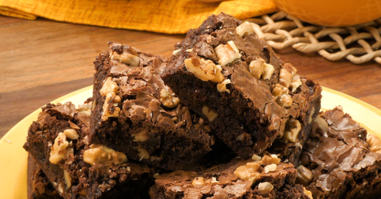

Brownie Super Fácil
A receita perfeita para sua festa de família
 preparo
40 min
preparo
40 min
 rendiento
8 porções
rendiento
8 porções
 favoritos
95.577
favoritos
95.577


Ingredientes
- 6 colheres (sopa) bem cheias, de margarina sem sal
- 3/4 xícara (chá) achocolatado
- 1/2 xícara (chá) chocolate em pó
- 1 e 1/4 xícara (chá) farinha de trigo
- 2 xícaras (chá) açúcar
- 4 ovos
- 2 pitadas de sal
- 1 colheres (chá) de extrato ou essência de baunilha
- 1 tablete de chocolate meio amargo picado em cubinhos
- 1/2 xícara (chá) de nozes picadas ou castanhas de caju granuladas

modo de preparo
- Misture os ovos e o açúcar.
- Em seguida, agregue todos os outros ingredientes até formar um creme uniforme.
- Misture os ovos e o açúcar
- Em seguida, agregue todos os outros ingredientes até formar um creme uniforme
- Em seguida, agregue todos os outros ingredientes até formar um creme uniforme.
- Despeje em uma assadeira, forrada com papel-manteiga e leve ao forno médio por 40 minutos.
- O brownie estará pronto quando a parte de cima estiver levemente corada e, ao se espetar um palito, ele esteja levemente úmido (devido ao chocolate derretido).
- Corte em quadrados ainda quente e sirva com uma bola de sorvete de creme, ou congele num saquinho para freezer.
- Para descongelar, coloque o brownie num prato de sobremesa e aqueça no micro-ondas, potência alta, por 1 minuto.
informações adicionais
O tradicional brownie de chocolate é uma preferência nacional, mas existem variações desse doce para agradar a todo mundo, desde o brownie de nescau até o brownie fit que leva cacau, o brownie low carb e o brownie vegano. Outra coisa que pode variar é a forma de fazer: geralmente é no forno, mas quer um brownie fácil que fica pronto em minutos? O brownie de caneca no microondas vai resolver a sua vida.
Confira a seguir algumas dicas para que seu brownie fique perfeito:
1) As pitadas de sal servem para realçar o sabor do chocolate: não deixe de usá-las!
2) Misture a farinha delicadamente para que a massa não fique pesada.
3) Usar forma de metal faz com que o brownie fique pronto mais rapidamente: se utilizá-la, fique de olho no tempo de forno.
Procurando mais receitas doces incríveis? Experimente as nossas receitas de brigadeirão, bolo de fubá cremoso, pavê de chocolate simples, bolo de cenoura, pudim de leite condensado, brigadeiro, cookie americano perfeito e a melhor receita de bolo de chocolate!
Se você adora receitas doces, confira nossas listas com pratos deliciosos:
Receitas com leite de coco: confira opções doces e salgadas
20 receitas com leite em pó: deliciosas e práticas